3. Them What Make the Rules and Them What Live the Dream
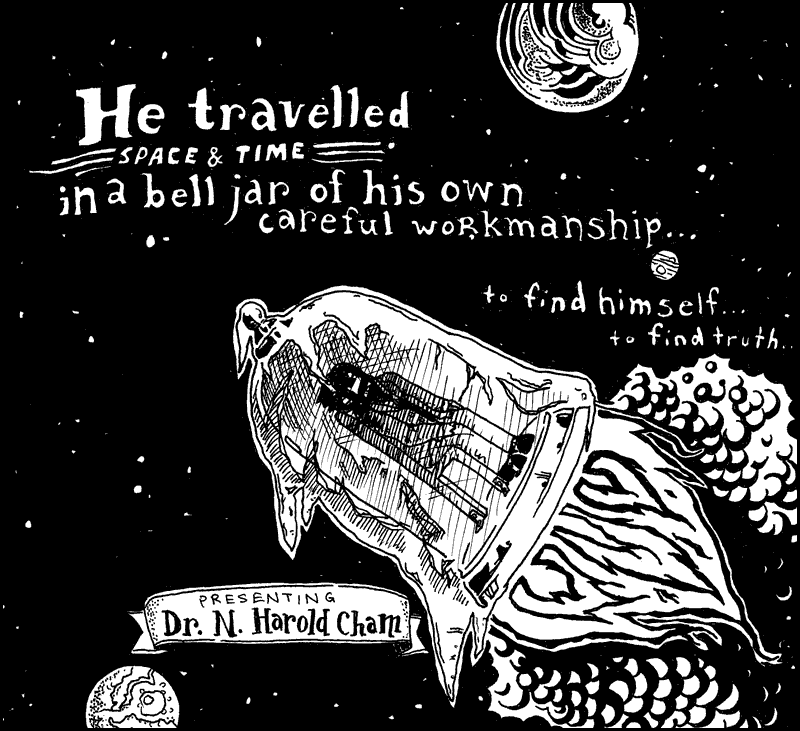
Frankly, I’m sick and tired of hearing that Dr. Cham was a madman. Yes, he tried to bury himself alive. Yes, he electrocuted his niece. Yes, in fact, he did dynamite a retirement home. But this was all with good cause and, in each case, I believe he took the correct course of action.
I’m sure you’d like to side with popular opinion, but you’re bound to feel some small trickle of admiration for him once he’s taken time to teach you all about Python’s class definitions. And more so when you learn about mixins. And perhaps, by the end of the chapter, we can all start to look beyond the Doctor’s grievous past and stop calling him a madman.
So if you need to call him a madman, I’d start heading down to the train tracks to smash up some long fluorescent light bulbs. Get it out of your system right now, before we dig in.
1. This One's For the Disenfranchised
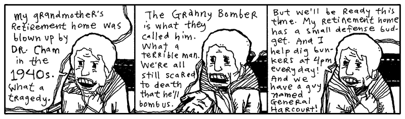
If you give me a number, which is any year from Dr. Cham’s life, I’ll give you a synopsis of that time period. And I’ll do it as a Python function, so it’s an independent piece, an isolated chunk of code which can be hooked up to the voice of a robotic volcano, when such a thing becomes the apex of authoritative voice talents.
Okay, so I need you to notice def and match and case.
And, I need to you remember strings can auto-concatenating, even across lines:
["cat in the hat"].
Wrapping them in parentheses makes this work across multiple lines (clean multi-line strings).
So, please: def and match and case.
def dr_chams_timeline( year ):
match year:
case 1894:
return "Born."
case y if y in range(1895,1913):
return "Childhood in Louisville, Winston Co., Mississippi."
case y if 1914 <= y <= 1919:
return "Worked at a pecan nursery; punched a Quaker."
case y if 1920 <= y <= 1928:
return ("Sailed in the Brotherhood of River Wisdomming, which journeyed "
"the Mississippi River and engaged in thoughtful self-improvement, "
"where he finished 140 credit hours from their Oarniversity.")
case 1929:
return "Returned to Louisville to pen a novel about time-traveling pheasant hunters."
case y if 1930 <= y <=1933:
return ("Took up a respectable career insuring pecan nurseries. Financially stable, he "
"spent time in Brazil and New Mexico, buying up rare paper-shell pecan trees. Just "
"as his notoriety came to a crescendo: gosh, he tried to bury himself alive.")
case 1934:
return ("Went back to writing his novel. Changed the hunters to insurance tycoons and the "
"pheasants to Quakers.")
case y if 1935 <= y <= 1940:
return ("Took Arthur Cone, the Headmaster of the Brotherhood of River Wisdomming, as a "
"houseguest. Together for five years, engineering and inventing.")
case 1941:
return "And this is where things got interesting."
The def keyword. Here is our first function definition. A plain function,
which can be used anywhere in Python. And how do we run it?
Using 1941 as the argument prints “And this is where things got interesting.”
Here each case statement answers with a string.
Now, let's try print(dr_chams_timeline( 1905 )).
You’ve seen the range, range(1895,1913), back in chapter 3. It includes every year from 1895 to 1912, but it excludes 1913. While the range itself isn't equal to a single year like 1905, but the year 1905 lives inside it. So the code section under case y if y in range(1895, 1913) runs for any year from 1895 to 1912 and our case statement returns "Childhood in Louisville, Winston Co., Mississippi."
But what if we put a year in the far, far future, 3012 when Python version 10.x will be released?
In Python, a function that does not include an explicit return statement, will return the value None.
It’s the same story again and again: Python prefers to explicitly state things. No need to guess at a value when unsure. Explicit over implicit means fewer surprises, reduces bugs, and makes code easier to maintain. Code is read more often than it is written, so an explicit codebase makes onboarding new developers much faster than one filled with implicit shortcuts.
Let me be clear about the case statement. Actually, I should call it a match..case statement, since they are used together. The match keyword is followed by a pattern, which is compared against a pattern following the case keyword. Python tests the cases from top to bottom and runs the first one whose pattern matches and whose guard, if there is one, is true. You can do the same thing with a bunch of if..elif statements, but it’s wordier.
def dr_chams_timeline_with_fallback( year ):
if year==1894:
return "Born."
elif year in range(1895,1913):
return "Childhood in Louisville, Winston Co., Mississippi."
else:
return "No information about this year."
Is identical to:
def dr_chams_timeline_with_fallback( year ):
match year:
case 1894:
return "Born."
case y if y in range(1895,1913):
return "Childhood in Louisville, Winston Co., Mississippi."
case _:
return "No information about this year."
So now, print(dr_chams_timeline_with_fallback(3012)), with our revised version, will print "No information about this year." instead of returning None. The year 3012 is not bound to any variable.
Note that the match and case statements work much like an if/elif chain, but they allow Python to match patterns as well as specific values. In this example, the value of year is compared against each case in turn. Notice the catch-all case using _. This works much like the else clause after an if/elif chain. The _ is a wildcard pattern that matches anything. Unlike names such as year or x, it does not bind the matched value to a variable. It simply says, "match whatever is left."
The above match..case code actually looks like a timeline, doesn’t it? Sure, dr_chams_timeline is a function, but it does read like a timeline, clean and lovely.
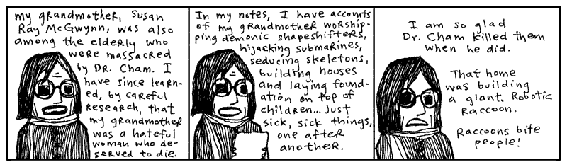
Match and Bind!
Python’s match and case aren’t just boring number crunching inspect-o-meters! Oh no. They reach right inside your data packages, crack open the shell, and snatch out the meat while checking them. Dr. Cham calls this structural dissectography.
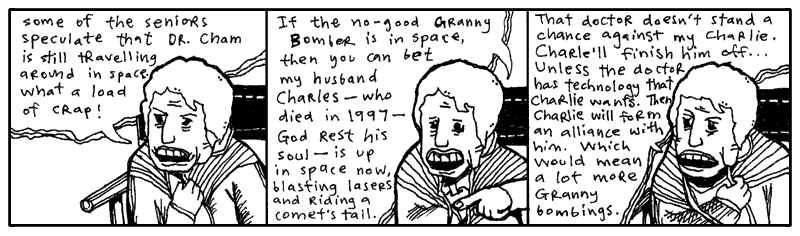
In the example below, Dr. Cham feeds various traveling sidekicks into the machine. match checks how many critters are riding together in the vehicle (a list or a tuple, it doesn’t care!) and binds them instantly to one or more variable, x, y, and z, before they can scamper off.
def inspect_the_caravan(passengers):
match passengers:
case [x]:
print("A solitary wanderer! Greetings, " + str(x) + ".")
case [x, y]:
print("A dramatic duo: " + str(x) + " and his trusty sidekick, " + str(y) + "!")
case [x, y, z]:
print("A full-on trio! " + str(x) + ", " + str(y) + ", and " + str(z) + " are singing in harmony.")
case _:
print("Gadzooks! Too many match sticks in one basket! UNSUPPORTED!")
# Dr. Cham tests the mechanism:
inspect_the_caravan(["Elephant toe", "phenacetin"])
# Output: A dramatic duo: Elephant toe and his trusty sidekick, phenacetin!
inspect_the_caravan(("goat's milk", "sea salt", "peppercorns"))
# Output: A full-on trio! goat's milk, sea salt, and peppercorns are working in harmony.
inspect_the_caravan(["sedated", "sprinkled", "electrocuted", "Hannah"])
# Output: Too many match sticks in one basket! UNSUPPORTED!
But Was He Sick??
You know, he had such bad timing. He was scattered as a novelist, but his ventures into alchemy were very promising. He had an elixir of goat's milk and sea salt that got rid of leg aches. One guy even grew an inch on a thumb he’d lost. He had an organic health smoke that smelled like foot but gave you night vision. He was working on something called Liquid Ladder, but I’ve never seen or read anything else about it. It can’t have been for climbing. Who knows.
One local newspaper actually visited Dr. Cham. Their book reviewer gave him four stars. Really. She did an article on him. Gave him a rating.
Just know that Dr. N. Harold Cham felt terrible about his niece. He felt the shock treatment would work. The polio probably would have killed her anyway, but he took the chance.
On Sept. 9, 1941, after sedating her with a dose of phenacetin in his private operating room, he attached the conducting clips to Hannah’s nose, tongue, toes, and elbows. Assisted by his apprentice, a bespeckled undergraduate named Marvin Holyoake, they sprinkled the girl with the flakes of a substance the doctor called opus magnum. A white powder gold which would carry the current and blatantly energize the girl, forcing her blood to bloom and fight and vanquish.
But how it failed, oh, and how, when the lever was tossed, she arched and kicked—and KABLAM!—and BLOY-OY-OY-KKPOY! Ringlets of hair and a wall of light, and the bell of death rang. The experiment collapsed in a dire plume of smoke and her innocence (for weeks, everyone started out with, “And she will never have the chance…”) was a great pit in the floor and in their lungs.
To Hannah, I code.
# function definition
def save_hannah():
opus_magnum = False # local variable
# calling the function
save_hannah()
print( opus_magnum ) # Pulls an error: `NameError: name 'opus_magnum' is not defined`.
Functions in Python are a bit like disappearing island. Have you heard the expression 'No man is an island'? It's the same for functions. They can be isolated sometimes desolate places only allowing things to come in and out from certain places -- arguments and return values. Dr. Cham couldn’t breach the illness of his niece, any more than an opus_magnum variable can escape from the steely exterior of a function without a proper return clause.
Should we run the save_hannah function, Python will squawk at us, claiming it sees
no opus_magnum.
I’m talking about scope. Microscopes narrow and magnify your vision. Telescopes extend the range of your vision. In Python, scope refers to a field of vision inside of functions, classes, and list comprehensions.
Variable names introduced in a function's def statement or inside a list comprehension are kept within their own scope, like a little pocket of fresh air. A function's scope ends when the function finishes, while a list comprehension's scope ends when the comprehension is finished. The air bubble collapses (well, almost... objects that are still referenced stick around). You can pass data into a function using arguments, and data can be returned, but variables created inside the function are only available within its scope.
In Python, classes (the blueprints for creating new objects) work differently. A class body is a workshop that builds a namespace (a place where Python keeps track of names and what they refer to) while its methods typically fetch their class tools through self., cls., or the class name. Instance variables like self.names, which start with self, are available to methods through the instance. Class variables defined at the top of a class, belong to the class and can be accessed through the class or its instances.
We'll explore class and instance variables in a moment.
verb = 'rescued'
states = ['sedated', 'sprinkled', 'electrocuted']
def save_hannah():
for verb in states:
print("Dr. Cham " + verb + " his niece Hannah.")
save_hannah()
print( "Finally, Dr. Cham " + verb + " his niece Hannah.")
The function's for loop iterates (spins, cycles) through each of the Doctor’s actions. The
verb variable changes with each pass. In one pass, he’s sedating. In the next,
he’s powdering. Then, he’s electrocuting.
So, the question is: after the function is over, will he have rescued Hannah?
Dr. Cham sedated his niece Hannah.
Dr. Cham sprinkled his niece Hannah.
Dr. Cham electrocuted his niece Hannah.
Finally, Dr. Cham rescued his niece Hannah.
Function first looks to see variables in the vicinity and if not found, then looks outward
through the LEGB telescope . But this function has its own
verb variable which is updated each cycle. When the function completed and its
life ended, the
outer verb stayed the same as it was before.
It's the same story with list comprehensions.
The verb variable in the list comprehension is temporary.
verb = 'rescued'
states = ['sedated', 'sprinkled', 'electrocuted']
print(["Dr. Cham " + verb + " his niece Hannah." for verb in states])
print( "Finally, Dr. Cham " + verb + " his niece Hannah.")
['Dr. Cham sedated his niece Hannah.', 'Dr. Cham sprinkled his niece Hannah.', 'Dr. Cham electrocuted his niece Hannah.']
Finally, Dr. Cham rescued his niece Hannah.
This is the nature of local variables. When its scope closes, the variable
goes away with it. Say that verb wasn’t used before the list comprehension.
states = ['sedated', 'sprinkled', 'electrocuted']
print(["Dr. Cham " + verb + " his niece Hannah." for verb in states])
print( "Finally, Dr. Cham " + verb + " his niece Hannah.")
Pulls an error: NameError: name 'verb' is not defined. Poof. The inner
variable won't leak outside its scope.
Even passing a variable with the same name won't modify its value outside the function:
opus_magnum = False
def save_hannah(opus_magnum): # Creates a brand new local argument
opus_magnum = True
save_hannah('Help Her!')
print(opus_magnum) # False -- The inner variable won't leak outside its scope.
Python looks up variables according to LEGB rule (Local, Enclosing, Global, Built-in). The LEGB rule determines where Python looks for variables, searching first from local then to enclosing, then global, and finally built-in:
- Local: Variables created inside the current block of code.
- Enclosing: Variables in an outer/parent block of code.
- Global: Variables defined at the top level of the entire Python file.
- Built-in: Names provided by Python itself, such as
print,len, andstr.
However, despite being called global, there is a massive catch with these variables in Python: while you can freely read global variables inside functions, classes, and list comprehensions, trying to modify them directly will create a brand new local variable:
tesla_coil = 0
def grow_tesla_coil():
tesla_coil = 1 # creates a new local variable
grow_tesla_coil()
print(tesla_coil) # still 0
Or sometimes it may even fail instead:
tesla_coil = 0
def grow_tesla_coil():
tesla_coil = tesla_coil + 1 # Throws an UnboundLocalError! (trying to read and write, Python gets confused)
grow_tesla_coil()
print(tesla_coil)
To modify variables within the scope of a function, we can declare them global.
tesla_coil = 0
def grow_tesla_coil():
global tesla_coil # not commonly used
tesla_coil = tesla_coil + 1
grow_tesla_coil()
print( tesla_coil ) # prints 1 -- global variables can be modified inside of a function
global keyword in Python is not often used. Frequent use is widely considered a
poor programming practice. Much better to pass in an argument and return a value like so:
tesla_coil = 0
def grow_tesla_coil(coils):
coils = coils + 1
return(coils)
tesla_coil = grow_tesla_coil(tesla_coil) # pass in a variable as an argument and update its value by assignment
print( tesla_coil ) # prints 1
It must be something difficult, even for a great scientist, to carry away the corpse of a young girl whose dress is still starched and embroidered, but whose mouth is darkly clotted purple at the corners. In Dr. Cham’s journal, he writes that he was tormented by her ghost, which glistened gold and scorched lace. His delusions grew and he ran from hellhounds and massive vengeful, angelic hands.
Only weeks later, he was gone, propelled from these regrets, vanishing in the explosion that lifted him from the planet.
And even as you are reading this now, sometime in these moments, the bell jar craft of our lone Dr. Cham touched down upon a distant planet after a sixty year burn. As the new world came into view, as the curvature of the planet widened, as the bell jar whisked through the upset heavens, tearing through sheets of aurora and solar wind, Dr. Cham’s eyes were shaken open.
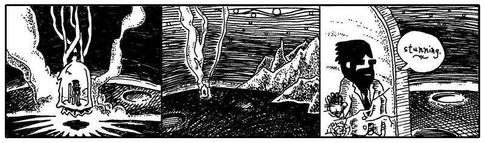
What you are witnessing is the landing of Dr. Cham on the planet Endertromb. From what I can gather, he landed during the cusp of the Desolate Season, a time when there really isn’t much happening on the planet. Most of the inhabitants find their minds locked into a listless hum which causes them to disintegrate into just vapid ghosts of one-part-wisdom and three-parts-steam for a time.
Welcome to Planet Endertromb!
For three days (by his pocket watch’s account), Dr. Cham traveled the dark shafts of air, sucking the dusty wind of the barren planet. But on the third day, he found the Desolate Season ending and he awoke to a brilliant vista, decorated with spontaneous apple blossoms and dewy castle tiers.
2. A Castle Has Its Computers
Our intrepid Doctor set off for the alien castle, dashing through the flowers. The ground belted past his heels. The castle inched up the horizon. He desired a stallion, but no stallion appeared. And that’s how he discovered that the planet wouldn’t read his mind and answer his wishes.
As my daughter’s organ instructor explained it, however, the planet could read minds and it could grant wishes. Just not both at the same time.
One day as I quizzed the organ maestro, he sketched out the following Python code on a pad of cheese-colored paper. (And queer cheese smells were coming from somewhere, I can’t say where.)
endertromb.py doesn't exist
The endertromb.py module and Endertromb class are fictional. Because of the module doesn't exist, you won't be able to run the code for any of these Endertromb examples in the section. But that's okay!
Sometimes in coding we have to use other libraries as black boxes, without knowing or caring how they are implemented. Just relax a little and give into the idea of programming-as-language! Then imagine in your mind's eye a planet Endertromb that can read minds and makes wishes.
import random
from endertromb import Endertromb # Python module from planet Endertromb
class WishMaker:
def __init__(self):
self.energy = random.randint(0, 5)
def grant(self, wish):
if len(wish) > 10 or " " in wish:
raise ValueError("Bad wish.")
if self.energy == 0:
raise RuntimeError("No energy left.")
self.energy -= 1
Endertromb.make(wish)
This is the wish maker.
Actually, no. This is a definition for a wish maker. To Python, it's a class definition. The code describes how a certain kind of object will work.
Each morning, a new WishMaker is created, with up to five wishes available for granting:
So remember:
- Class = the blueprint to create a wish maker e.g. WishMaker
- object = the thing that grants wishes e.g. todays_wishes
ClassName, object_name, and PEP 8?
Note that, by convention, class names such as Door use CapWords (also called PascalCase), where each word begins with a capital letter. Object names, such as back_door, along with variables and functions, typically use snake_case, where words are separated by underscores and written in lowercase.
CapWords name are used for factory: Door, MindReader, WishMaker (standing tall, giving orders). While snake_case are individual objects the factory makes: back_door, smaug, and my_wish_maker (keeping their heads down and traveling in neat little snake-shaped lines).
PEP 8: These naming habits come from PEP 8, which guides code readability. Python doesn't enforce these rules; you could name a class door, DOOR, or dOoR and the code would still run.However, humans rely on these conventions to understand code structure at a glance:
Door(CapCase): signal to developers that this is a class, the blueprint or factory for creating objects.back_door(snake_case): signals variables, objects, functions, and methods.
Think of these little naming customs like trail markers in a dark and scary forest 🌲🌲🌲. Nobody forces you to follow them, but they make it much easier for everyone to find their way home. After a while, you'll start recognizing Python code at a glance because the names all have a familiar shape and rhythm. The Shape of You by Ed Sheeran starts playing in the background.
Calling WishMaker() creates a new object. There is some Python magic behind the scenes we'll get into that soon, but basically Python initializes or prepares the object. The __init__ method tells Python exactly how to do this, and in this case assigns a random amount of energy to the wish maker object. This number represents how many wishes the wish maker has left for the day. So, occasionally, when energy is zero, there are no wishes available at all (talk about bad luck).
Notice that outside the class, we access the the instance variable energy like so:
But, inside the class, we access that same instance variable through self:
In chapter three, we briefly looked at instance variables. Instance
variables can be used to store any kind of information, but they’re most often
used to store bits of information about the object represented by the class.
Here, self.energy is an instance variable belonging to that a particular object.
The object todays_wishes has its own energy level. If the
todays_wishes was a new gadget, you might see a gauge or battery meter on it that points to the energy
left inside. In this case, energy is the instance variable that acts as that gauge for todays_wishes.
Getting back to the class definition:
class WishMaker:
def __init__(self):
self.energy = random.randint(0, 5)
def grant(self, wish):
if len(wish) > 10 or " " in wish:
raise ValueError("Bad wish.")
if self.energy == 0:
raise RuntimeError("No energy left.")
self.energy -= 1
Endertromb.make(wish)
Where does the self come from? Why do we need to use it inside of the class definition for WishMaker, especially when we are already inside the class method grant?
When an object call a method, Python automagically passes that object as a first argument. In def grant(self, wish):, the self parameter receives the object that calls it:
"Hello wish maker object calling me, I am naming you self!"
We could name it whatever we want, but convention dictates that we call it self so everyone is clear we are referencing the calling object.
For example, when we call todays_wishes.grant( "antlers" ), Python passes todays_wishes to grant as self and can then used to access instance variables and methods (among other things)!
Now, if yesterdays_wishes were to call grant, then what would self reference then? Exactly right, only the instance variables of yesterdays_wishes! That's because self is an object reference, pairing an object with its attributes. When grant is called via yesterdays_wishes , Python cannot access the object todays_wishes attributes no matter how hard it tries.
Remember instance variables are tied to a current object. Since a class can be used to create many, many objects, we need a way to point the current object! So self becomes a placeholder meaning “this specific object right here.” We always must use self when we want to retrieve and store its instance variables as these are like an object's private property.
Okay, step back and ensure you understand the example here. The WishMaker
class is an outline we’ve laid out for how the whole magic wish program works.
It’s not the actual genie in the bottle (the object), it’s the paperwork behind the scenes.
It’s the rules and obligations the genie has to live by. The WishMaker class the factory that
makes genies.*
And todays_wishes, that’s the genie in the bottle. And here we’re giving it a
wish to grant. Give us antlers, genie. (If you really get antlers from this
example, I don’t want to hear about it. Go leap in meadows with your own kind
now.)
Using self marks the beginning of crossing over into many of the more advanced
ideas in Python. Python is definition language. You’re defining a method, designing
it before it gets used. You’re preparing for the existence of an object which
uses that method. You’re saying, “When grant gets used, there will be a
wish maker (a genie in the bottle) at that time which is the one that will grant the wishes. And self is a special variable which refers to that wish maker object itself.:
Python is an object-oriented programming language. A succulent and brain-splitting discussion is coming your way deeper in this book.
Note about self: Methods are just functions defined inside a class, so they follow the standard Local, Enclosing, Global, Built-in (LEGB) rules. Instance variables use a different lookup, through self! Since they belong to a particular object, we need a reference to the object to access them.
Defining and Putting things to action: object and method
In the last chapter, the drill was: Python has two halves.
- Defining things.
- Putting those things into action.
What are actions in Python? That's right: functions (including methods). And now, you’re having
a lick at the definition language built-in to Python. Function (including method)
definitions use def. Class definitions use class.
At this point in your instruction, it’s easier to understand that everything
in Python is an object. Strings, integers and even functions and classes are objects.
We see addition and length with the familiar object.method(value) format below,
showing that underneath the floorboards, they have methods just like any other object.
number = 5
print(number+1) # prints '6' (invokes the integer object's __add__ method)
#print(number.__add__(1)) # object.method(value)
phrase = 'wishing for antlers'
print(len(phrase)) # prints '19' (invokes the string object's __len__ method)
#print(phrase.__len__()) # object.method(value)
todays_wishes = WishMaker()
todays_wishes.grant("antlers") # object.method(value)
And, consequently, each object has a class behind the scenes.
print( type(5) ) # prints <class 'int'>
print( type('wishing for antlers') ) # prints <class 'str'>
print( type(WishMaker()) ) # prints <class '__main__.WishMaker'>
Dr. Cham never saw the wish maker as he hustled across the landspace. It lay far beyond his landing in the valley of Sedna. Down sheer cliffs stuffed with layers of thicket, where you might toss your wish (written on a small 1” x 6” slip), down into the gaping void. Hopefully it will land on a lizard’s back, sticking to its spindly little horn.
And let’s say your wish makes it that far. Well, then, down the twisted wood goes the skinny salamander, scurrying through the decaying churches which had been pushed over that steep canyon ledge once and for all. And the expired priest inside, who weathered the fall as well, will kill the little amphibian—strangle it to death with a blessed gold chain—and save it for the annual Getting To Know You breakfast.
He’ll step on your precious little wish and, when the thieves come, that slip will still be there, stuck on his sole. Of course, the thieves’ preferred method of torture is to cut a priest in thin deli-shaved slices from top to bottom. Who can cull evidence from that? And when they chop that last thin slice of shoe sole, they’ll have that rubber scalp in hand for good luck and good times.
But they canoe much too hard, these thieves. They slap their paddles swiftly in the current to get that great outboard motor mist going. But the shoe sole is on a weak chain, tied to one man’s belt. And a hairy old carp leaps, latches on to that minute fraction of footwear. And the thieves can try, but they don’t see underwater. If they could, they’d see that mighty cable, packed with millions of needly fiber optics. Indeed, that fish is a peripheral plugged right into the core workings of the planet Endertromb. All it takes is one swallow from that fish and your wish is home free!
And that’s how wishes come true for children in this place.
Once my daughter’s organ instructor had drawn up the class for the wish maker, he then followed with a class for the planet’s mind reader.
from endertromb import Endertromb
class MindReader:
def __init__(self):
self.minds = Endertromb.scan_for_sentience()
def read(self):
return [mind.read() for mind in self.minds]
Now getting back to that __init__. The __init__ method runs when a new MindReader
object is created. This __init__ gathers scans of the planet for mindshare.
It looks like these minds are stored in an iterable collection, since they are later iterated over using a list comprehension in the read method.
Think of it like this: MindReader() brings an object into the room, then __init__ arranges the new object as we'd like.
Now the actually code inside the MindReader is quite confusing and seems a bit circular a read() method that calls another read() method? Let's hold off on tackling that just yet, but I promise it will make sense soon.
Dr. Cham Ventures Inside
But as Dr. Cham neared the castle, although the planet was aware of his thoughts, sensing his wonderment and anticipation, all Dr. Cham felt was deadness. He tromped up the steps of its open gate and through the entrance of the most beautiful architecture and was almost certain it was deserted.
For a while he knocked. Which paid off.
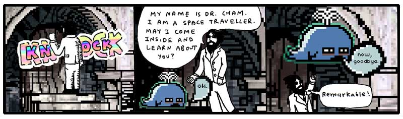
He watched the baby whale rise like a determined balloon. He marveled at his first alien introduction and felt some concern that it had passed so quickly. Well, he would wait inside.
As he stepped through the castle door, he felt fortunate that the door hadn’t been answered by a huge eagle with greedy talons, eager to play. Or a giant mouse head. Or even a man-sized hurricane. Just a tubby little choo-choo whale.
“Not a place to sit down in this castle,” he said.
At first, he had thought he had just entered a very dim hallway, but as his eyes adjusted, he saw the entrance extended into a tunnel. The castle door had opened right into a passage made of long, flat slabs of rock. Some parts were congruous and resembled a corridor. Other parts narrowed, and even tilted, then finally tipped away out of view.
The passage was lit by small doorless refrigerators, big enough to hold an armful of cabbage, down by his feet. He peered inside one, which was hollow, illuminated along all sides, and turning out ice shards methodically.
He pawed the ice chips, which clung dryly to his fingertips, and he scrubbed his hands in the ice. Which left some muddy streaks on his hands, but satisfied a small part of his longing to bathe. How long had it been? Ten years? Thirty?
Along the passage, long tubes of cloth cluttered some sections. Later, bright pixel matter in porcelain scoops and buckets.
He happened upon a room which had been burrowed out of the tunnel which had a few empty turtle shells on the ground and a large illuminated wall. He stared into the room, bewildered. What could this be? In one state of mind, he thought of having a seat on a shell. This could be the entrance at last, some kind of receiving room. On the other hand, spiders could pour out of the shell’s hollow when he sat. He moved on.
Meal in a Castle’s Pocket
As he journeyed along the passageways (for the central tunnel forked and joined larger, vacuous caverns), he picked up themes in some locations. Groups of rooms infested with pumping machinery. Cloth and vats of glue dominated another area. He followed voices down a plush, pillowed cavity, which led him to a dead end: a curved wall with a small room carved at eye-level.
He approached the wall and, right in the cubby hole, were two aardvarks eating at a table.
They gazed at him serenely, both munching on some excavated beetle twice their size, cracked open and frozen on its back on the table.
“Hello, little puppets,” he said, and they finished their bites and kept looking with their forks held aloof.
“I wish my niece Hannah were here to meet you,” he told the attentive miniature aardvarks. “She’d think you were an intricate puppet show.” He peered in at the dining area, shelves with sets of plates, hand towels. Half of a tiny rabbit was jutting out from the top a machine, creamy red noodles were spilling out underneath it. A door at the back of the room hung ajar. Dr. Cham could see a flickering room with chairs and whirring motors through the door.
“Any child would want this dollhouse,” he said. “Hannah, my niece, as I mentioned, she has a wind-up doll that sits at a spindle and spins yarn. It’s an illusion, of course. The doll produces no yarn at all.”
One of the aardvarks opened a trapdoor in the floor and pressed a button down inside, which lit. Then, a small film projector slowly came up on a rod. The other aardvark sat and watched Dr. Cham.
“But Hannah still reaches down into the dollhouse and collects all the imaginary yarn into a bundle. Which she takes to her mother, my sister, who is very good at humoring Hannah. She sews a dress to the doll’s dimensions, which Hannah takes back to the doll.
“And she tells the doll, ‘Here, look, your hard work and perseverance has resulted in this beautiful dress. You can now accept the Chief of Police’s invitation to join him tonight at the Governor’s Mansion.’ And she has a doll in a policeman’s uniform who plays the part of the Chief. He’s too scrawny to be an actual Chief, that would require quite a bit of plastic.”
The aardvark responsible for the film projector loaded a reel and aimed the projector at the back wall. The film spun to life and the aardvark took a seat. A green square appeared on the wall. The attentive aardvark stared at Dr. Cham still.
“Your films are colored,” said Dr. Cham. “What a lovely, little life.”
The film played on: a blue square. Then, a red circle. Then, an orange square. The attentive aardvark turned away, watched the screen change to a pink triangle, and both aardvarks resumed eating.
A purple star. A red square. With quietness settling, Dr. Cham could hear notes droning from the projector. Like a slow, plodding music box trying to roll its gears along the train tracks.
“Yes, enjoy your supper,” said Dr. Cham and he politely tipped his head away, marching back up the path he’d taken.
Another Dead End Where Things Began
He found himself lost in the castle’s tunnels. Nothing looked familiar. He wasn’t worried much, though. He was on another planet. He would be lost regardless.
He wound through the tunnels, attempting to recall his paths, but far too interested in exploring to keep track of his steps. He followed a single tunnel deep, down, down, which slanted so steeply that he had to leap across ledges and carefully watch his footholds. The gravity here seemed no different than Earth. His legs were pulled into slides just as easily.
Although he had no absolute way of knowing where he was, he felt certain that he had left the castle’s boundaries. This deep, this long of a walk. It had been an hour since he’d entered through the door. And, as the tunnel wound back up, he was sure that he would emerge into a new dwelling, perhaps even a manhole which he could peek out from and see the castle. Perhaps he shouldn’t have come so far down this route. He hoped nothing was hibernating down here.
The tunnel came to a stop. A dark, dead end.
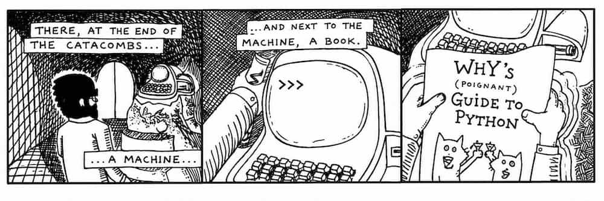
He had time. So he read the book. He read of the foxes and their pursuit of the porcupine who stole their pickup truck. He read of the elf and the ham. He saw the pictographs of himself and found he could really relate to his own struggles. He even learned Python. He saw how it all ended.
Were I him, I couldn’t have stomached it. But he did. And he pledged in his bosom to see things out just as they happened.
On the computer monitor, Dr. Cham saw the steady >>> prompt. Like Dr. Cham,
you might recognize the >>> prompt from The Tiger’s Vest (the first
expansion pak to this book, which includes a basic introduction to Python Shell, the interactive interpreter.)
Whereas he had just been exploring tunnels by foot, he now explored the machine’s setup with the prompt. He set the book back where he had found it. He didn’t need it anymore. This was all going to happen whether he used it or not.
Play along with your own Elevator class!
Download the Elevator class, import it, and help Dr. Cham investigate the Elevator on your Python shell. Resist the urge to look at the elevator.py code. We want to learn about it the way a programmer that hates documentation might learn about code, through directly trying around with it.
- Download: elevator.py
- Import:
from elevator import Elevatoror open the file and run it with the play button in your IDE - Use:
dir(Elevator)
He started with the dir built-in function, returning a list of names currently defined in the local scope:
He scanned the list for anything unfamiliar. Any classes which didn’t come with
Python. __package__, __spec__, builtin_classes, builtins, constants. Each of those came with
Python.
But at the very beginning of the list:
[ "Elevator", "__annotations__" ...
Elevator? Exactly the kind of class to poke around with. He had a go with the dir function again, this time
on the Elevator itself.
>>> dir(Elevator)
=> ['diagnostic_report', 'power_circuit_active', '_Elevator__maintenance_password', '_level', '__dict__', '__dir__', '__doc__', '__eq__', ... another long list ... ]
Looks like the Elevator class had plenty of methods and attributes.
But what's with all the attributes starting and ending with ""?
The attributes starting and ending with "" like __dict__ and __eq__ in Python are
called dunder attributes (or dunder methods when they are functions) and are shared by many objects in Python.
For example, - str: Turns the object into a nice text string for humans to read. - repr: Shows an exact, official string look of the object for developers. - len: Gives back the size or count of items inside the object.
The few variables at the start of list were interesting to Dr. Cham. This elevator appeared genuine.
He tried to create an Elevator object.
>>> e = Elevator()
Traceback (most recent call last):
File "<stdin>", line 1, in <module>
TypeError: __init__() missing 1 required positional argument: 'password'
He tried a few passwords.
>>> e = Elevator( "going up" )
PermissionError: bad password
>>> e = Elevator( "going_up" )
PermissionError: bad password
>>> e = Elevator( "stairs_are_bad" )
PermissionError: bad password
>>> e = Elevator( "StairsAreBad" )
PermissionError: bad password
That was useless. Oh, wait! Hadn't he seen maintenance_password?
>>> Elevator.maintenance_password
AttributeError: type object 'Elevator' has no attribute 'maintenance_password'
He had seen some variable like maintenance_password, but looking more closely, the name had some sort of long prefix.
>>> dir(Elevator)
=> ['diagnostic_report', 'power_circuit_active', '_Elevator__maintenance_password', '_level', '__dict__', '__dir__', '__doc__', '__eq__', ... another long list ... ]
He looked up and wrote down the full name of the class variable:
Alright! He got the password. Did you see that?
Class Variables?
While instance variables are the most common way to define attributes within a Python class, you can also use class variables. Instead of belonging to a single object, class variables are shared with all related objects of the same class in Python.
class Door:
# Class variables: Shared by ALL doors
WARRANTY_FINE_PRINT = "1 year money back guarantee. Void for French or Polish doors."
We call class variables by simply using the class name followed by a dot and the variable name e.g. Door.WARRANTY_FINE_PRINT.
Why the long name? When attributes begin with __, Python performs mangling to make the names harder to accidentally access. When you add a __double_leading_underscore, you are telling Python its off limits and the mangling helps to enforce that. While no substitute for true elevator security, name mangling does prevent accidental overwrites of this important class information.
We can still grab the mangled class variable, but we just gad to use the much longer name to show we actually are trying to access it _Elevator__maintenance_password.
We will be using the password frequently, so Dr. Cham decides why not make a method to retrieve it? He quickly codes up the method and adds it to the class as a class method.
def get_pass(cls):
return cls._Elevator__maintenance_password # gets the password from the mangled variable
Elevator.get_pass = classmethod(get_pass)
Elevator.get_pass() # "stairs_are_history!"
Isn’t that great how you can create new methods and apply them to Elevator and Python modifies
the existing class definition?
Class methods can be called using Class name followed by a dot. Since Elevator is a class itself, we know that if we call Elevator.get_pass(), we are calling class method.
Now, class methods are a bit unusual. Normally you won’t want to store
information directly inside of a class. However, if you have a bit of
information that you need to share among all objects of a class, then you have a
good reason to use the class for storage. It’s understandable that the
__maintenance_password would be stored in the class, instead of in each
separate object. This way, the objects can simply reach up into the class and
see the shared password.
Here’s probably how the password protection works (which is slightly pointless class variables can be seen from the outside):
class Elevator:
__maintenance_password = "stairs_are_history!" # Python will manage this variable name for us at runtime
...
def __init__(self, password ):
if password != self._Elevator__maintenance_password:
raise PermissionError("bad password")
...
Plus, since classes in Python can be altered and overwritten and remolded, someone who knew how things worked could always just change the password and bypass our elevator security.
But Dr. Cham already had the password. Ownership of the elevator is his.
>>> e = Elevator( "stairs_are_history!" )
#<__main__.Elevator object at 0x7f117bf7d5e0>
>>> print(e.level) #4
>>> e.level = 1
=> Moving down from level 4 to level 1.
He was standing right there when the elevator doors, off behind the computer terminal, opened for him.
Dr. Cham stood in shock. Setting level to 1 resulted in an action? How could it be? He would only learn much later from the lottery capitan, the mysterious hidden force behind this action.
With an exasperated sense of accomplishment and a good deal of excitement surrounding all of the events that lie ahead, he stepped into the elevator and pressed 4.
3. The Goat Wants to Watch a Whole Film

The elevator had opened into a green room full of shelves and file cabinets. Reels of tape and film canisters and video tape everywhere. Dr. Cham hadn’t a clue what most of it was. All he saw was a big, futuristic mess.
He called out again, stumbling through alleys of narrow shelves, “Hello-o-o?? I’m looking for intelligent life! I’m a space traveler!” He tripped when his foot slid right into a VCR slot. “Any other beings I can communicate with?”
Hand cupped around mouth, he yelled, “Hello-o-o?”
“Crying out loud.” The sleepy goat came tromping down the aisle.
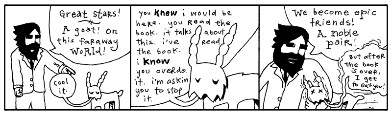
“I hate that book,” said the goat. “I believe the author is disingenuous.”
“Really?” asked Dr. Cham.
“I’m sure it’s all true. It’s just so heavily embellished. I’m like: Enough already. I get it. Cut it out.”
“I’m not quite sure what to make of it,” said the Doctor. “It seems like an honest effort. I actually wrote something in Python back there.”
“It doesn’t give goats a very good name,” said the goat.
“But you are the only goat in the book,” said the Doctor.
“And I’m totally misquoted.”
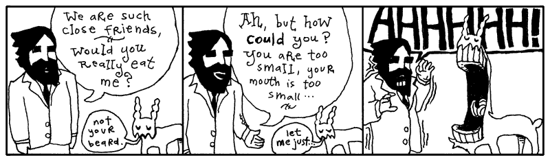
The goat closed his mouth and Dr. Cham held his heart.
“I’m actually very literate,” said the goat. “Albeit, more recently, I’ve switched to movies. I love foreign films. One of my relatives just brought back Ishtar from your planet. Wow, that was excellent.”
“I haven’t been to my planet in a long time. It would be difficult to consider it my home at this stage.”
“Well, Warren Beatty is delightful. His character is basically socially crippled. He actually tries to kill himself, but Dustin Hoffman sits in the window sill and starts crying and singing this totally hilarious heartbreak song. I’ve got it here, you should see it.”
“Can I get something to eat?” asked the Doctor. And he still felt filthy.
“How about we watch a film and you can have a buttermelon with tentacles?” said the goat.
So, they worked their way back toward the goat’s projector. Back by the freezer locker, they sat on a giant rug and broke off the appendages of frozen buttermelons. The shell was solid, but once it cracked, rich fruit cream was in abundance. Sweet to taste and a very pleasant scent.
“First film, you’ve got to see,” said the goat. “Locally filmed and produced. I’m good friends with the lady who did casting. Dated her for awhile. Knew everyone who was going to play the different roles long before it was announced.”
The goat set the projector by Dr. Cham. “I’ve got the music on the surround sound. You can man the knob.”

Dr. Cham’s mind wandered at this point in the presentation, just as the land war mounted between the two throngs of animal settlers. The details of their wars and campaigns continued to consume the spool of transparent film that Dr. Cham was feeding through the projector.
War after war after war. The Sieging of Elmer Lake. The Last Stand of Newton P. Giraffe and Sons. Dog Invasion of Little Abandoned Cloud. No animals died in these wars. Most often an attack consisted of bopping another animal on the head. And they philipped each other’s noses. But, believe me, it was humiliating.
Blasted crying shame. Things could have worked out.
The Birth of an Object
“Don’t worry,” said the goat, anxious to sway Dr. Cham’s attention back to the film. “Things do work out.”
In Python, the Object is the very center of all things. It is The Original.
The parentheses indicate inheritance. This means that the new ToastyBear class is a new class based on the object class. Every method that object has will be available in ToastyBear. Attributes available in object will be available in ToastyBear. But every object inherits from object. In Python 3, the code…
Is identical to…
Inheritance is handy. You can create species of objects which relate to each
other like we did before with CustomString as a subclass of str. Often, when you’re dissecting a problem, you’ll come across various objects which share attributes. You can save yourself work by inheriting from classes which already solve part of that problem.
You may have a UnitedStatesAddress class which stores the address, city,
state, and zip code for someone living in the United States. When you start
storing addresses from England, you could add a UnitedKingdomAddress class. If
you then ensure that both addresses inherit from a parent Address class, you
can design your mailing software to accept any kind of address.
def mail_them_a_kit(address):
if not isinstance(address, Address):
raise TypeError("No Address object found.")
print(address.formatted())
Also, inheritance is great if you want to add or change certain behaviors in an existing class (as we did when with CustomString, adding new methods). Perhaps you want to make your own slight variation to the list class, and add a join() method similar to what the str class provides. This too is possible with subclassing. Those smug strings with their .join() parties will have nothing on our brand new ListMine class!
So you start your own class and name it ListMine, and base it on The Original list.
class ListMine(list):
"""A custom list class with enhanced string joining capabilities."""
def join(self, sep, fmt):
"""Format each item in the list and join them with a separator."""
formatted_items = [fmt.format(item) for item in self] # apply formatting
return sep.join(formatted_items) # join using separator
We use the str.format() method which is especially useful when the format string is stored in a variable or constructed dynamically. ListMine is now a custom list class with its own join() method. So list is the base class (or superclass) of ListMine, and ListMine is the subclass.
Every class has a bases attribute where you can check this subclass relationship.
Perfect. We manage a hotel and we have a list of our room sizes: [3, 4, 6]. Let’s get it nicely formatted for a printed brochure.
rooms = ListMine([3, 4, 6])
fmt = "{} bed" # "{}" is replaced by each item in the list
print("We have " + rooms.join(", ", fmt) + " rooms available.")
Which prints, “We have 3 bed, 4 bed, 6 bed rooms available.”
Looks okay but a bit confusing. Let's tweak the format to give a more formal feel before printing brochure:
rooms = ListMine([3, 4, 6])
fmt = "{}-bedroom"
print("We have " + rooms.join(", ", fmt) + " rooms available.")
Which prints, “We have 3-bedroom, 4-bedroom, 6-bedroom rooms available.” Notice that we could just quickly change the format by changing fmt without having update the print statement.
Now ListMine our brand new class, had a ton of methods built in that it inherits from list. When we extend our tiny hotel adding giant 7-bedroom and 8-bedroom rooms, for big families, all we have to do is the the extend() method that ListMine inherits from list.
rooms = ListMine([3, 4, 6])
rooms.extend([7,8])
fmt = "{}-bedroom"
print("We have " + rooms.join(", ", fmt) + " rooms available.")
The extend() method is great for adding multiple items to the end of a list. Because lists are mutable, extend() adds the items directly to the existing list. We don't need to assign the result back to the list.
Also extend() is more flexible than the + operator as it accept any iterable and not just lists as its argument.
rooms = ListMine([3, 4, 6])
my_tuple= (7,8)
rooms.extend(my_tuple)
my_range = range(9,11)
rooms.extend(my_range)
fmt = "{}-bedroom"
print("We have " + rooms.join(", ", fmt) + " rooms available.")
An important thing to point out, extends() modifies a list in place, so no assignment is needed!
Mutable methods can modify in-place. Immutable methods most always return a value.
Let's review.
-
Mutables (lists, dictionaries, sets) are objects in Python we usually modify in-places:
-
Immutables (strings, integers, tuples) are objects that like gift store name tags, can never be modified. Method outputs must be assigned:
Also note that while most of our inherited methods for lists will work great, some behaviors may not work as expected and may need to be manually overriden in our ListMine class to function correctly.
rooms = ListMine([3, 4, 6]) + ListMine([7,8]) # __add__ is hardcoded to return a brand-new list
type(rooms)
=> <class 'list'>
Without even trying, we get a ton of powerful methods all inherited from The Original list. Yes, that is the power of subclassing.
Dr. Cham was looking around for a bathroom, but archival video tape was everywhere. He eventually found a place, it may have been a bathroom. It had a metal bin. More importantly, it was dark and out of eyesight.
While he’s in there, let me add that while The Originals slaughtered The Invaders to prove their rights as First Creatures, the Python Object doesn’t have any such dispute. It is the absolute king Object the First.
Watch.
>>> isinstance(42, object)
True
>>> isinstance("Blix", object)
True
>>> def my_func(): pass
>>> isinstance(my_func, object)
True
>>> type(42)
<class 'int'>
>>> type("Blix")
<class 'str'>
>>> type([1, 2, 3])
<class 'list'>
Every value in Python is an object, and each one of these objects has a type. type simply means what kind of value it is, so we know how to use it. Virtually all programming languages use variable types. Some types in Python include int, str, and list.
42is an object oftype:int"Blix"is an object oftype:str[1, 2, 3]is an object oftype:list
In Python, values aren't just pieces of data; they are objects that Python can work with according to their type.
42has method.bit_length()"Blix"has method.lower().[1, 2, 3]has method.reverse()
Now watch this:
class MyClass:
pass
A class is a subclass of the ultimate base 'object'
print(isinstance(MyClass, object))
# Output: True
You can pass a class around like any other object
def print_class_name(cls_obj):
print(cls_obj.__name__)
print_class_name(MyClass)
# Output: MyClass
Remember:
- Class = the blueprint to create a wish maker e.g. MyClass
- object = the thing made e.g. myclass_obj
But even MyClass is an Object!? Yes, every class and every function in Python is an object. In Python, the phrase "everything is an object" is a literal truth—integers, strings, functions, modules, and indeed classes themselves are all objects occupying memory.
See, although classes are the definition language for objects, we still call class methods on them and treat them like objects occasionally. It may seem like a dizzying circle, but it’s truly a very strict parentage.
Now let's check the type of MyClass
class MyClass:
pass
myclass_obj = MyClass()
print(type(myclass_obj))
# Output: <class '__main__.MyClass'>
Why does Python show __main__.ClassName?
When you check the type of an object in Python, you will often see output like <class '__main__.MyClass'>. The short answer why is that __main__ is the name of the environment (the module) where your code is currently running (We'll get into modules soon). When using Python Shell or running a script directly, this name shows up as __main__.
There is one more curious thing, since classes are objects too, who creates classes? Who is its parent? If you ask Python for the type of a normal class, Python gives you the answers with a metaclass named type.
>>> print(type(MyClass)) # Output: <class 'type'>
>>> print(type(int)) # Output: <class 'type'>
>>> print(type(type)) # Output: <class 'type'>
Your type is type!? Shouldn't int's type be class? Let's just say that since in Python, everything is an object, classes themselves had to have something that made them. So the idea of a metaclass named type was born, and sit at the top of the food chain.
flowchart BT
obj["myclass_obj<br>(<i>instance</i>)"]
cls["MyClass<br>(<i>class</i>)"]
typ["type - top of the food chain<br>(<i>metaclass</i>)"]
obj -->|"instance of"| cls
cls -->|"instance of"| typ
typ -->|"instance of"| typWhat's this metaclass?
A metaclass is simply a class that constructs other classes. Just like a normal class defines how an object behaves, a metaclass defines how a class behaves.
By unifying types and classes, Python established a clear rule: type is the ultimate metaclass.When you create a class like class User:, the "factory" or metaclass that built it is type.
Metaclasses were officially introduced as a standard part of Python's object machinery in Python 2.2, released in December 2001. This release unified types and classes, formalizing the use of the type as the default metaclass.
In Python, types are determined at runtime and belong to objects rather than variables. Every value is an object, and every object has a type. Variables being dynamically typed means variables don't have fixed types. A variable is simply a name that refers to an object. The object has a type and that type is determined at runtime.
The Medieval Fiefdom and Module Mother Superior
This idea of types being attached to objects gives us one more place to look: modules. In Python, a module is a single file containing Python code (with a .py extension) that can define functions, classes, variables, and runnable code.
Think of the Python kingdom like a medieval fiefdom.
We already learned about objects and type:
-
objectis the supreme king—every single inhabitant ultimately traces their lineage back to his royal bloodline. -
type(metaclass) is the overworked village schoolteacher—the one actually responsible for creating and molding all the classes in town.
But what is a module?
moduleis the waifish nun—her sole purpose in life is to give food, shelter, and a warm hearth to orphaned functions and homeless variables.
The whole point of a module’s existence is to give food and shelter to code.
Functions can stay dry under a module’s shawl. A module can hold classes, constants, and variables of any kind.
“But what does a Module do?” you ask. “How is it gainfully employed??”
“That’s all it does!!” I retort, stretching out my open palms in the greatest expression of futility known to man. “Now hear me—for I will never speak it again—that Module Mother Superior has given these wretched objects a place to stay!!”
# saint_agnes.py
# See, the file is the module -- where else could our code possibly stay?
# A CONSTANT is laying here by the doorway. Fine.
TOOTHLESS_MAN_WITH_FORK = ['man', 'fork', 'exposed gums']
# A Class is eating, living well in the kitchen.
class FatWaxyChild:
pass
# A function is hiding back in the banana closet, God knows why.
def timid_foxfaced_girl():
return {'please': 'i want an acorn please'}
if __name__ == "__main__":
fwc = FatWaxyChild()
Now you have to go through Saint Agnes to find them.
>>> import saint_agnes
>>> saint_agnes.TOOTHLESS_MAN_WITH_FORK
['man', 'fork', 'exposed gums']
>>> s = saint_agnes.FatWaxyChild()
>>> print(s)
<saint_agnes.FatWaxyChild object at 0x7f88>
>>> type(s)
<class 'saint_agnes.FatWaxyChild'>
>>> [name for name in dir(saint_agnes) if not name.startswith('__')]
['FatWaxyChild', 'TOOTHLESS_MAN_WITH_FORK', 'timid_foxfaced_girl'] #attributes of saint_agnes
Now notice that our class no longer says __main__.ClassName. Because our class is inside the saint_agnes module, it now appears with the format module.ClassName. If we were to import a file animal.py, then the class Dog would show up as animal.Dog (again module.ClassName).
Python is telling you both where the class lives and what it is named.
In Python, every class type is tracked by combining the module it was defined in and the name of the class itself. This namespace isolation prevents naming conflicts if two different modules happen to define a class with the exact same name.
Always remember that a Module is only an inn. A roof over their heads and organizes classes.
It is not a self-aware Class and, therefore, cannot be brought to life with ().
What is if __name__ == "__main__":?
The if __name__ == "__main__": boilerplate works like a master switch. It controls whether certain code runs, usually turning on some code for testing when we are running the script directly and turning it off when imported by another file.
Here's an example. Can you figure out which parts will spark to life when you run the script directly versus when you import the file into another project?
class Dog:
def bark(self):
return "Woof!"
if __name__ == "__main__":
print("Testing the Dog class locally:")
my_dog = Dog()
print(my_dog.bark())
Hint: Every Python file carries a secret, built-in variable called __name__. It holds the value "__main__" when you run the script directly, but changes to the actual file's name (like "animal") the moment it gets imported elsewhere!
Answer
The if section only runs and prints "Testing..." when you execute animal.py directly or copy and paste the code into Python Shell.
We’ve seen that integers, strings, functions, and classes are all objects. But what about the modules that organize our Python code?
We can even ask Python what type of object it is:
# A module is just a regular object sitting in memory too!
import math
# 1. Look at its type
print(type(math))
# Output: <class 'module'>
# 2. It also inherits from the ultimate king 'object'
print(isinstance(math, object))
# Output: True
As it turns out, Python keeps the same rule here too. A module is an object. When Python imports math, for example, it creates a module object and gives the name math to it.
Now consider math module we just imported for a moment. So math isn't some special kind of thing floating outside Python's object system. It is an ordinary object with a type module, just like everything else we've encountered.
St. Agnes has given up her whole life in order that she may care for these desperate bits of code. Please. Don’t take that away from her.
If you wanted to alter St. Agnes, though, I can help you. You can bring in a larger corporation to mess with the ministry of saint_agnes and then what is she left with? In Python, modules are mutable objects. You can inject new attributes right into them, swap their inner workings, or copy their elements at runtime—a technique Python wizards call "monkey patching."
# We can dynamically inject a brand new function straight into Saint Agnes from the outside!
def corporate_takeover():
return "This inn is now a high-rise condo."
import saint_agnes
saint_agnes.corporate_takeover = corporate_takeover
# Now Saint Agnes hosts the new corporate function too!
print(saint_agnes.corporate_takeover())
# Output: This inn is now a high-rise condo.
In truth, saint_agnes doesn't need a corporate_takeover function but we added one just in case.
Now while monkey patching works great for coporoate takesovers, they are ineffective against the Originals. Python does now allow changes to Core Built-in types like object, int, str, float, list, dict, and tuple. Trying to run int.corporate_takeover = ... raises a TypeError (e.g., TypeError: can't set attributes of built-in/extension type 'int').
If Python allowed changing the Originals it might have disasterous consequences and create security risks. So Python just made it forbidden. In any case, if Vanilla Ice can sample "Under Pressure" without messing up the original, we can do the same and just subclass the Originals as we did with ListMine.
"Ice, Ice Baby" new code. new code.
Using the collections model to make you custom version of the Originals
We could also use the collections module. This module provides Python-implemented wrappers designed specifically for subclassing and modification: UserDict, UserList, and UserString. But that's a story for another day.
You gotta admit. The old abbey can be modified a zillion times and that little fox-faced girl will still be back in the banana closet wanting an acorn! Too bad we can’t feed her. She’s a method with no arguments.
When Dr. Cham came out refreshed, the filmstrip was a bit behind. But the goat hadn’t noticed, so the Doctor advanced frames until it made some sense.
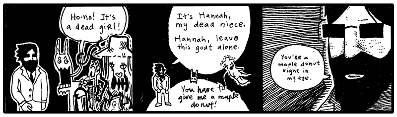
So the invaders left the planet.
“This planet is decrepit,” said Dr. Cham. “The castle is nice. But inside it’s a disaster.”
“The whole castle look is a projection,” said the goat. “All the flowers and apple blossoms and the sky even. It’s a low-resolution projection.”
“Yes? It is enchanting.”
“I guess.”

“That’s messed up!” said the goat. “That’s not the way the film ends! There’s no blood! What happened? What happened? Did you screw up the knob, idiot?”
“Well, I don’t know,” said Dr. Cham. He turned the knob reverse and forward. Tapped the lens.
“Check the film! Check the film!”
Dr. Cham pulled out a length of film from the projection feed, melted and dripping from its end.
“Curse that! These projectors are quality! I’ve never had this happen. There’s no way.”
Hunting For a Voice
“I don’t think it was the projector,” said Dr. Cham. “Something flew across that screen and uttered a blistering moan.”
“I don’t have any dupes of that movie,” said the goat somberly. “And that girl. That casting director. I never see her anymore.”
Dr. Cham stood up and looked over the dumpy aisles of magnetic carnage, searching.
“Oh, hey, you should call that girl,” the goat went on. “You could talk to her, get an understanding. Tell her about me. Don’t act like you're my friend , just, you know, ‘Oh, that guy? Yeah, whatta maroon.’”
Dr. Cham spotted the doorway and exited.
The hallways were an entirely new world of mess. In the goat’s archives, the shelves had been messy. In the hallway, shelves were completely tipped. Sinks were falling through the ceiling. The Doctor ventured under the debris, kicking through plywood when necessary.
“You shouldn’t be out here,” said the goat. “You’re on someone else’s property at this point. A couple of pygmy elephants own all this. They’re nasty guys. They’ll beat the crap outta you with their trunks. They ball it up and just whack ya.”
Dr. Cham pushed a file cabinet out of his way, which fell through a flimsy wall, then through the floor of the next room over. And they heard it fall through several floors after that.
“I’m trying to remember how it goes in the book,” said Dr. Cham, as he walked swiftly through the hall. “That milky fog that swept across the projection. We find that thing.” He jiggled a door handle, broke it off. Forged through the doorway and disappeared inside.
“You really get a kick out of beating stuff up, don’t you?” said the goat. “Walls, doors.” The goat headbutted a wall. The wall shuddered and then laid still.
Then, it was quiet. And black.
The goat stayed put in the bleak hallway, expecting Dr. Cham to flip over a few desks and emerge, ready to move on from the room he’d busted into. But Dr. Cham didn’t return, and the goat opted to share a moment with the neglected wreckage left by his neighbors. Not that he could see at all. He could only hear the occasional rustling of the piles of invoices and carbon copy masters and manila envelopes when he shifted his legs.
The ground seemed to be buckling right under the goat , as if the heaps of kipple around him were beginning to slide toward his weight. He would be at the center of this whirlpool of elephant documentation. Would he die of papercuts first? Or would he suffocate under the solid burial by office supplies?
A soft light, however, crept up to him. A floating, silver fish. No, it was a—was it scissors? The scissors grew into a shimmering cluster of intelligent bread, each slice choking on glitter. But no, it was hands. And an Easter hat.
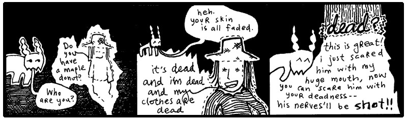
In another room, Dr. Cham stood under the clear glass silently. The ceiling had abruptly gone transparent, then starlight washed over his pants and jacket. He walked further to the room’s center in muted colors, lit as softly as an ancient manuscript in its own box at the museum. More stars, more cotton clusters of fire, unveiled as he came across the floor. And it peeked into view soon enough, he expected it to be larger, but it wasn’t.
Earth. Like a painted egg, still fresh. He felt long cello strings sing right up against his spine. How could that be called Peoplemud? Here was a vibrant and grassy lightbulb. The one big ball that had something going for it.
He thought of The Rockettes. Actually, he missed The Rockettes. What a bunch of great dancers. He had yelled something to The Rockettes when he saw them. Something very observant and flattering.
Oh, yes, while The Rockettes were spinning, arm in arm, he had yelled, “Concentric circles!” Which no one else cared to observe.
And this thought was enough to feed Dr. Cham’s superiority complex. He wore a goofy smile as he retraced his footsteps. He truthfully felt his genius coming through in such a statement. To realize the simplicity of a circle was his. He reflected on it all the way back to the hallway.
Which I think is great. Adore yourself when you have a second.

“Oh, right,” said the goat. “Your niece. The niece you killed. I’m with ya now.”
For just a few moments, they all looked at each other. Just enough time for both Dr. Cham and the goat to think: Oh, yeah. Hannah causes us a lot of trouble. She’s already talking about maple donuts.
“Does she start talking about maple donuts right away like that?” asked the goat.
“Yes, she does,” said the Doctor. “She brings it up to you, then she brings it up to me. She sees a maple donut somewhere—I don’t quite remember where.”
“Do I see a real maple donut?” Hannah said. “I need a real one.”
“Okay, okay,” said the goat. “Yeah, I remember: here’s where she says that if she gets a real maple donut, she’ll become a real person again. Because her real destiny was to own a bakery and you ruined that destiny and now she’s trapped as a ghost.”
“Hey, that’s the truth!” Hannah yelped.
“It’s terrible that we must bear through this whole scene again,” said the Doctor. “The donuts are immaterial. They should be left out altogether.”
“Man, I am having a hard time remembering all of this chapter,” said the goat. “I don’t even remember how to get out of this hallway. I must have read that book like thirty times. Do we blast through a wall? Do we scream until someone finds us?”
“We get Hannah to float through walls and she finds some kind of machine,” says Dr. Cham. “I have to write a program—it all works out somehow.”
“But, you know what I’m saying?” said the goat. “I forget all the details. Especially the earlier chapters. I mean I can remember the ending perfectly. It’s hard to sit through all this. The end is so much better.”
Dr. Cham folded his arms and teetered on a heel. “The porcupine.” He smiled greedily at the goat.
“Oh, totally. The porcupine is definitely who I want to meet,” said the goat. “I wonder what he does with all that money when the book is over.”
Dr. Cham nodded respectfully. “I’m very excited to see him wearing slippers.”
“Those infernal slippers!” said the goat and he haw-hawed coarsely, a shower of saliva cascading from his jaws.
Hannah’s mind rattled, waiting for this nonsense to break for a moment. She tipped her head on its side and the rattle slid along the curve of her cranium. The little noise died away, though, as the back of her head vanished (fluxed out is what she called it) and then her head was back again with its little rattle and she caught herself doing that careless moaning again. HRRRRRR-RRR-OH-RRRR-RRRR.
“I’m not as into the chunky bacon stuff,” said the goat. “I don’t see what’s so great about it.”
Could she speak while moaning? BON-BON. With a French moan. BOHN-BOHN. BOHN-APPE-TEET-OHHHH-RRRR.
“I know she’s harmless, but that sound freaks me out. My hair is completely on end.”
“Hannah?” said Dr. Cham. “Where are you, child? Come do a good turn for us, my niece.”
She was right near them, in and out. And they could hear her cleaning up her voice, bright, speaking like an angel scattering stardust. Yes, the whole maple donut story came out again, and more about the bakery she would own, the muffins and rolls and baguettes.
4. Them What Make the Rules
Hannah leapt back from the wall and clenched down on her fingers.
“This is the wall,” said Dr. Cham. “The Originals are in there. My child, can you lead us to the observation deck?”
“You expect us to go up against those guys?” asked the goat. “They’re mad as koalas. But these koalas have lasers!”
“We prevail, though,” said Dr. Cham. “You and I know this.”
“Okay, well I’m muddled on that point,” said the goat. “Do we really win? Or could we be thinking about Kramer vs. Kramer? Does Dustin Hoffman win or do we win?”
“No. No. No. No.” Hannah hovered and dragged her legs along the wall nervously. “There is a man with a huge face in there!”
“Mr. Face,” said the Doctor. “He is the original face.”
“He didn’t see me,” said Hannah and moaned. HOMA-HOMA-ALLO-ALLO.
She made that hollow weeping through the crumbling mouseholes and the freezer gateways, fluxing in and out, causing the video checkpoints to hiss and the wall panels to brace themselves and fall silent. The three passed through two levels of frayed security and emerged in the observation deck overlooking the cargo bay.
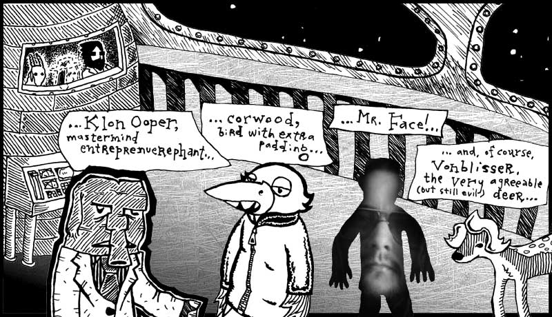
“The last living among The Originals,” said Dr. Cham. “Are you alright with this, Hannah?” Which she didn’t hear in any way, as her eyes lay fixed on the legendary creatures.
“Look at them,” said the goat. “These guys wrote the rule books, Doctor. We owe everything to these guys.”
“What about God?” said Dr. Cham.
“I don’t really know,” said the goat. “Hannah probably knows better than any of us about that.”
Hannah said nothing. She only really knew one other ghost and that was her Post-Decease Mediator, Jamie Huft. Who didn’t seem to have any answers for her and required questions to be submitted in writing with a self-addressed stamped envelope included. Hannah hadn’t gotten the ball rolling on that P.O. Box yet.
“We must be up in the mountains,” said the goat. “Look out at that blackness.”
“I saw another deck like this down by where we found Hannah,” said Dr. Cham. “Down closer to your living area. You should take time to search for it. It’s very peaceful there. You can see Earth and the seven seas.”
“The seven seas?” The goat wondered if that was near The Rockettes. He’d read his share of material on precision dancing and he’d seen that line of legs, mincing across the stage like a big, glitzy rototiller.
Hannah stirred to life.
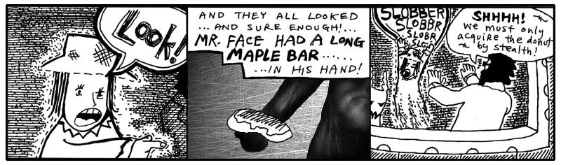
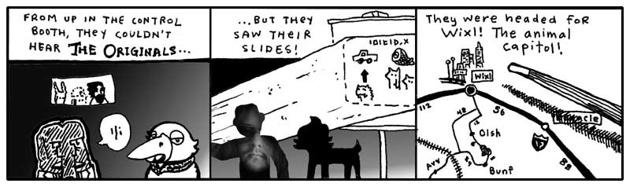
And none of the three spoke when The Originals flicked off the slide projector and boarded a very slender rocket ship and cleanly exploded through a crevice in the cargo bay roof.
“Oh, boy,” said the goat.
“What?” said Hannah.
“You’re going to die,” said the goat.
Dr. Cham looked over the controls in front of them, a long panel of padded handles and green screens.
“I’m already dead. I’m a ghost.”
The goat looked down at the Doctor, who was rummaging under the control panel. “Okay, well if your uncle isn’t going to have a talk with you, I’m going to make things very clear. There’s a good chance these guys are going to build a bomb. And you see how I’m fidgeting? You see how my knees are wobbling?”
“Yeah.”
“Yeah, that’s how real this is, kid. I don’t remember anything from that confounded book except that these guys are building a bomb that can blow up the ghost world. Because once the ghost world’s gone, then Digger Dosh gets his one second back. It’s a trade they’ve worked out. Hell, it’s sick stuff, that’s all you need to know.”
“But I’m dead.”
“Okay, well, we’re talking, aren’t we? You can talk, so are you dead?” The goat shook his head. “I wish I could remember if we win or if it was Dustin Hoffman.”
Hannah cried. “Why do I have to die again?” She wailed and her legs fell into flux and she sank into the floor. MOH-MOHHH-MAO-MAOOO.
Dr. Cham had forcibly yanked on a plush handle, which unlocked and slid open like a breadbox. He reached his hands inside and found a keyboard firmly bolted deep inside.
“That’s it,” he said and pulled up Python Shell.
You open it by typing python or python3 in your terminal. The Interactive Interpreter
appeared on a display to the left of his concealed typing. He checked the Python version.
Python was up-to-date. What else could he do? Scanning instance variables, class variables, and methods
was pointless. The only reason that had worked with the Elevator class was because someone had left
Python Shell running with their classes still loaded.
He had just loaded this Python Shell, so no special classes were available yet. He had to find some classes.
He started by importing Python’s sysconfig module to get an idea of how Python had been configured.
The sysconfig module contains information about how Python was built and installed. He wanted information about how Python itself had been installed. The sysconfig module could provide that too.
When a module is imported, where does it get stored??
So what does Python do to import random and where does random go when it gets imported? When we run import random, Python finds the module, loads it, and places it in sys.modules, a dictionary belonging to the sys module that Python uses to keep track of imported modules.
sys
└── modules
├── "random" → the actual random module
├── "sysconfig" → the actual sysconfig module
├── "math" → the actual math module
└── ...
You can see that any module we import gets stored in sys.modules:
So Python Shell has just confrimed another piece of the object model: modules are objects and sys.modules stores module objects, not filenames.
Now, if you want to see the names of the modules Python currently knows about, look at the dictionary’s keys:
>>> import sysconfig
>>> sysconfig.get_config_vars()
{'prefix': '/usr/local', 'exec_prefix': '/usr/local', 'LIBDIR': '/usr/local/lib', ...}
He imported the module and used one of its function, get_config_vars() (Want to see what else the module can do? Type sysconfig. and then pressing tab in Python Shell).
Far too much information came back to his command shell, so Dr. Cham need to ask for something more specific. What Dr. Cham really needed was directory where Python’s standard library was installed with:
And the directory where third-party packages were installed with:
Perfect! But now Dr. Cham had a more interesting question: Where else does Python look when we ask it to import a module?
That information lives in sys.path.
>>> import sys
>>> sys.path
['/usr/local/lib/python3.14',
'/usr/local/lib/python3.14/site-packages',
...]
sys.path is the list of directories Python searches when it encounters an import statement.
Python checks these locations in order until it finds a module or package that matches what we asked for.
For example, when Dr. Cham runs:
Python might look in places such as:
If it finds the module, Python loads it and stores the resulting module object in sys.modules.
Mine looks different!?
The entries in sys.path are often absolute paths—complete paths that identify a location
from the root of the filesystem.
- On Windows, they usually begin with a drive letter such as
C:\. - On Linux and macOS, they begin with
/.
The exact paths will vary from one computer to another.
The goat had peeked his head around Dr. Cham and was watching all these instructions transpire, as he licked his lips to keep his salivations from running all over the monitors and glossy buttons. He had been interjecting a few short cheers (along the lines of: No, not that or Yes, yes, right or Okay, well, your choice), but now he was fully involved, recommending code.
“Try import math or, no, try 3 * 5. Make sure that basic math works.”
“Of course the math works,” said Dr. Cham. “Let me be. I need to find some useful modules.”
“It’s a basic sanity test,” said the goat. “Just try it. Do 3 * 5 and see what comes up.”
Dr. Cham caved.
“Okay, great! We’re in business!” the goat tossed his furry face about in glee.
Dr. Cham patted the goat’s head. “Well done. We can continue.”
>>> import glob
>>> glob.glob('/usr/local/lib/python3.14/site-packages/*.py')
['endertromb.py', 'mindreader.py', 'wishmaker.py']
Dr. Cham had use glob to search the site-packages directory, a common place to store third-party modules and packages.
Here were the three legendary modules each containing classes that my daughter’s organ instructor had inscribed for me earlier in this chapter. And, Dr. Cham, having read this selfsame chapter, recognized these three pieces of the system immediately.
The endertromb module contained the Endertromb class which contained the mysteries of this planet’s powers. The mindreader module contained the MindReader class, which, upon scanning the minds of its inhabitants, read each mind’s contents. And, finally, the crucial wishmaker module contained the WishMaker class, which powered the granting of short wishes (ten letters or fewer), should the wish ever find its way to the core of Endertromb.
The goat’s eyes grew wide.
“How about 4 * 56 + 9?” he asked. “We don't know if it can do compound expressions.”
“I've got the mindreader right here,” said Dr. Cham. “And I have the wishmaker here next to it.
This planet can read minds. And this planet can make wishes. Now, let's see if it can do both at the same time.”
5. Them What Live the Dream
endertromb.py doesn't exist
The endertromb.py module and Endertromb class are fictional. Because of the module doesn't exist, you won't be able to run the code for any of these Endertromb examples in the section. But that's okay!
Sometimes in coding we have to use other libraries as black boxes, without knowing or caring how they are implemented. Just relax a little and give into the idea of programming-as-language! Then imagine in your mind's eye a planet Endertromb that can read minds and makes wishes.
Compositing a WishScanner
While The Originals’ craft had long disappeared, Dr. Cham frantically worked away at the computer built into the control panel up in the observation deck. Hannah had disappeared into the floor (or perhaps those little sparks along the ground were still wisps of her paranormal presence!) and the goat amicably watched Dr. Cham build a new piece of Python machinery.
class WishScanner:
def scan_for_a_wish(self, thoughts):
for thought in thoughts:
if thought.startswith("wish: "):
return thought.removeprefix("wish: ")
“What’s your plan?” asked the goat. “It seems like I could have solved this problem in like three lines.”
“This WishScanner is the new technology,” said Dr. Cham. “It only picks up a wish if it starts with the word wish and a colon and a space. That way the planet doesn’t fill up with every less-than-ten-letter word that appears in people’s heads.”
“Why don't you just put that method in MindReader?”
“Because the MindReader already has a job,” said Dr. Cham. “It reads minds. The WishScanner has a very different job. It finds wishes within thoughts.”
The goat shook his head.
“But how can MindReader use it?”
“Composition.” Dr. Cham smiled.
Dr. Cham tucked a WishScanner inside the MindReader:
from endertromb import Endertromb
class WishScanner:
def scan_for_a_wish(self, thoughts):
for thought in thoughts:
if thought.startswith("wish: "):
return thought.removeprefix("wish: ")
class MindReader:
def __init__(self):
self.minds = Endertromb.scan_for_sentience()
self.wish_scanner = WishScanner() # every mind reader needs a WishScanner
def read(self):
return [mind.read() for mind in self.minds]
def scan_for_a_wish(self):
thoughts = self.read()
return self.wish_scanner.scan_for_a_wish(thoughts)
“Now every MindReader has a WishScanner,” said Dr. Cham. “When I ask the mind reader to scan for a wish, it gathers the thoughts and hands them to its little scanner.”
“So the MindReader is using another object to do part of its work?”
“Exactly.”
This is composition. One object stores another object and hands over part of its work to it. The MindReader has a WishScanner.
That is different from subclassing:
A Cat is an Animal. But a MindReader is not a WishScanner. It simply has one.
This lets us keep our objects small and focused. The scanner doesn't need to know anything about minds. It doesn't care where the thoughts came from. It just looks through them for a properly formed wish.
This is one of the great pleasures of composition: instead of building one giant machine that does everything, you connect several smaller machines together. Each one handles its own job, and by working together they create something far more capable than any of them could be alone.
“And what is happening with [mind.read() for mind in self.minds]?”
“There’s a little bit of polymorphism hiding here. Polymorphism means that different kinds of objects can respond to the same method call in their own way. Endertromb returns a collection of minds. We don't know what kinds of objects they are, but we do know that each one understands the message read().”
The goat nodded in glee.
“So when MindReader loops over self.minds, it simply asks each object to read() itself. MindReader doesn't need to know whether each object is a HumanMind, GoatMind, TurnipMind, CloudMind, or something even stranger."
The goat head moved upwards quickly at the mention of GoatMinds.
"The MindReader doesn't care! It simply calls read(). As long as an object provides a read() method, MindReader that each object knows how to respond to it.
“Hey, that’s cool. What's it called again?” said the goat.
"This is polymorphism: many different kinds of objects responding to the same method call. One message, many possible behaviors. You read the book thirty times and you didn’t pick that up?” asked Dr. Cham.
The flow was starting to make sense to the goat:
minds -> thoughts -> wishes -> wishes made true.
Our two classes MindReader and WishMaker plugged into a foreign, unknown planet class with ease thanks to polymorphism.
“You’re a much better teacher in person,” said the goat. “I really didn’t think I was going to like you very much.”
“I completely understand,” said the Doctor. “This is much more real than the cartoons make it seem.”
from mindreader import MindReader
from wishmaker import WishMaker
reader = MindReader()
wisher = WishMaker()
while True:
wish = reader.scan_for_a_wish()
if wish:
wisher.grant(wish)
The Python interpreter sat looping on the screen. It'll do that until you hit Control-C. But Dr. Cham let it churn away, endlessly scanning the mind waves for a proper wish.
And Dr. Cham readied his wish.
At first, he thought immediately of a stallion. To ride bareback over the vales of Sedna. But he pulled the thought back. His wish hadn't been formed properly. A stallion was useless in pursuing The Originals, so he closed his eyes again, bit his lip and thought to himself: wish: whale
Somewhere inside the machinery, the little scanner began to glow.
Last Whale to Peoplemud
The blocky, sullen whale appeared down at the castle entrance, where Hannah was bashing on a rosebud with her hand. She whacked at it with a fist, but it only stayed perfect and pleasant and crisp against the solid blue sky of Endertromb.
“I’m bored,” she said to the whale. BOHR-BOHR-OHRRRRRR.
“OK,” said the whale, deep and soft. As the word slid along his massive tongue, its edges chipped off and the word slid out polished and worn in a bubble by his mouth’s corner.
“I always have to die,” said the young ghost. “People always kill me.”
The whale fluttered his short fins, which hung at useless distance from the ground. So, he pushed himself toward her with his tail. Scooting over patches of grass.
“People kill, so who do they kill?” said the girl. “Me. They kill me every time.”
The whale made it to within three meters of the girl, where he towered like a great war monument that represents enough dead soldiers to actually steal a lumbering step towards you. And now, the whale rested his tail and, exhausted by the climb thus far, let his eyelids fall shut and became a gently puffing clay mountain, his shadow rich and doubled-up all around the hardly visible Hannah.
But another shadow combined, narrow and determined. Right behind her, the hand came on to her shoulder, and the warm ghost inside the hand touched her sleeve.
“How did you get down here?” said the girl.
Dr. Cham sat right alongside her and the goat walked around and stood in front.
“Listen to us,” said Dr. Cham. “We’ve got to follow this mangy pack of ne’er-do-wells to the very end, Hannah. And to nab them, we need your faithful assistance!”
“I’m scared,” cried Hannah.
“You’re not scared,” said the goat. “Come on. You’re a terrifying little phantom child.”
“Well,” she said. “I’m a little bored.”
Dr. Cham bent down on a knee, bringing his shaggy presence toward the ground, his face just inches from hers. “If you come with us, if you can trust what we know, then we can bag this foul troupe. Now, you say your destiny is to be a baker. I won’t dispute that. You have every right on Earth—and Endertromb, for that matter—to become a baker. Say, if you didn’t become a baker, that would be a great tragedy. Who’s going to take care of all those donuts if you don’t?”
She shrugged. “That’s what I’ve been saying.”
“You’re right,” said the Doctor. “You’ve been saying it from the start.” He looked up to the sky, where the wind whistled peacefully despite its forceful piercing by The Originals’ rocket ship. “If your destiny is to be a baker, then mine is to stop all this, to end the mayhem that is just beginning to boil. And hear me, child—hear how sure and solid my voice becomes when I say this—I ended your life, I bear sole responsibility for your life as an apparition, but I will get it back. It’s going to take more than a donut, but you will have a real childhood. I promise you.”
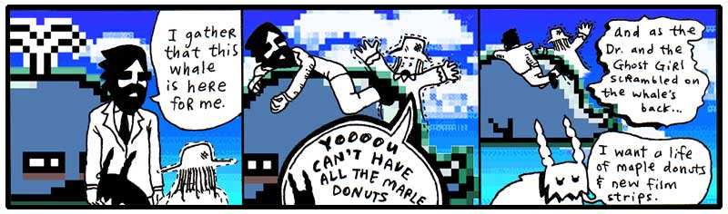
Sure, it took a minute for the goat to cut his wish down to ten letters, but he was shortly on his way, following the same jet streams up into the sky, up toward Dr. Cham and his ghost niece Hannah. Up toward the villainous animal combo pack called The Originals. Up toward The Rockettes.
And Digger Dosh bludgeoned and feasted on each second they left behind them.